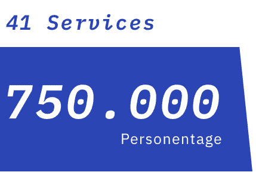
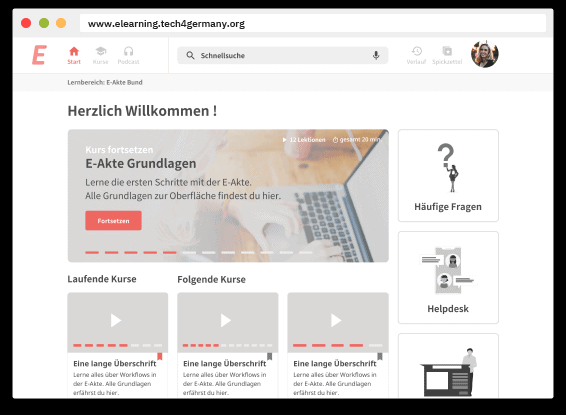
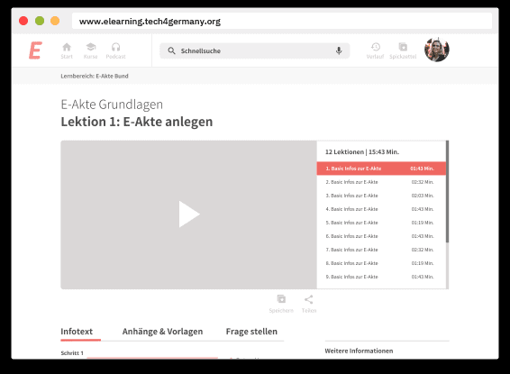
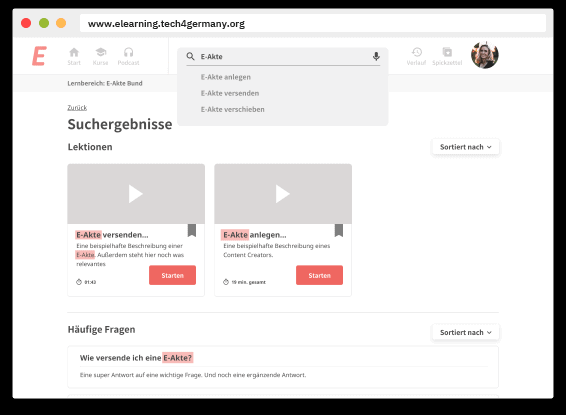

Projekt e-Learning ITZ Bund 2019
Projekt E-Learning im Bund
Die IT-Konsolidierung des Bundes bringt einen enormen Schulungsaufwand mit sich. Um allen Mitarbeiter:innen der Verwaltung einen reibungslosen Umstieg zu gewähren sollte E-Learning als wertvolle Chance genutzt werden.
Case Study
Herausforderung
Ab 2020 wird flächendeckend in allen Behörden die E-Akte eingeführt, die den Umgang mit der Papierakte abschafft. Eine enorme Umstellung für die Mitarbeiter:innen der deutschen Verwaltung. Die E-Akte ist nur eine von 41 Services, die im Rahmen der IT-Konsolidierung eingeführt werden.
Mit einer E-Learning Lösung soll der geschätzte Schulungsaufwand von 750.000 Personentagen reduziert und die Qualität der Schulungen durch Individualisierung gesteigert werden.

Zielsetzung
Damit für das Thema E-Learning im Bund die Wege bereitet werden, bereiten wir eine direkte Übergabe an die Mitarbeitenden im ITZBund vor und geben Handlungsempfehlungen mit auf den Weg.
Ein erster Prototyp zur Veranschaulichung der Vision einer E-Learning Plattform im Bund
Gezielte Ansprache unteschiedlicher Lerntypen durch eine entsprechende Strategie
Intensiver Austausch zur Verwirklichung der E-Learning Vision im weiteren Verlauf
Startseite
Die Startseite soll Nutzer:innen in ihrer Lernerfahrung bestärken. Begonnene Kurse können hier jederzeit fortgesetzt werden. Eine Anlaufstelle für Hilfesuchende ist deutlich sichtbar.

Kurse
Die Kursseiten bieten die Möglichkeit Anhänge & Vorlagen direkt runterzuladen und inhaltliche Fragen zu stellen.

Direkte Suche
Auch punktuelle Lerner kommen mit einer erweiterten Suche auf ihre Kosten und können Wissen erfahren ohne ganze Kurse oder Lektionen zu schauen.

Unsere Ergebnisse sind frei verfügbar
Executive Summary
Executive Summary der Dokumentation der E-Learning Plattform für die E-Akte.
Download
Case Study
Case Study zur Vorgehensweise im Projekt “E-Learning Plattform für die E-Akte”.
Link
Content
How-To Guide zur Erstellung von Schulungsvideos in Behörden.
Download
ProjektTEAM
Chantal Rexhausen \ Product Fellow
Patrick Reuter \ Engineering Fellow
Lailoma Scharifi \ Design Fellow
Sebastian Serth \ Engineering Fellow
Projektpartner
Andreas Bull \ Digitallotse
Daniel Eggert \ Digitallotse
Karsten Neubert \ Digitallotse
Christian Petri \ Digitallotse
Katja Bruver \ Digitallotsin
Annett Kaboth \ Digitallotsin